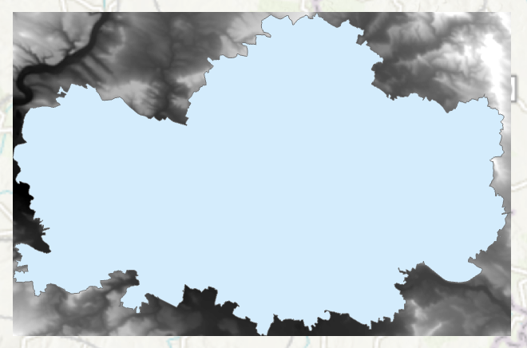

Rastrová data, georeferencování
Cíl cvičení
Seznámení se s rastrovými daty v GIS a ukázka využití těchto dat. Souřadnicové připojení rastrových dat. Práce s Mosaic Dataset.
Základní pojmy
- rastr – datová struktura založená na buňkách uspořádaných do řádek a sloupců, kde hodnota každé buňky reprezentuje hodnotu jevu
- rastrová data – prostorová data vyjádřená formou matice buněk nebo pixelů; spojitá data (nejčastěji digitální modely terénu, digitalizované mapy)
- pixel (buňka) – základní geometrický prvek zpravidla čtvercového tvaru; jeho množina vytváří rastrový digitální obraz; 1 buňka = 1 hodnota
- prostorové rozlišení rastru – velikost 1 buňky (pixelu) rastru (cell size)
- resample – změna prostorového rozlišení rastru
- digitální model terénu (DMT) – digitální reprezentace prostorových objektů (obecný pojem obsahující různé způsoby vyjádření terénního reiéfu nebo povrchu)
- digitální model reliéfu (DMR) – digitální reprezentace zemského povrchu (NEobsahuje vegetaci a lidské stavby)
- digitální model povrchu (DMP) – digitální reprezentace zemského povrchu (obsahuje vegetaci a lidské stavby, které jsou pevně spojené s reliéfem)
- transformace – obecný pojem pro výpočet, jehož cílem je převod souřadnic bodů z jednoho souřadnicového systému do druhého
- georeference – souřadnicové určení snímku
- pyramidování rastru – ukládání dat do menšího rozlišení pro rychlejší práci; pyramidy (náhledy) jsou uloženy v souborech .ovr
- mosaic dataset – mozaika; datová sada sjednocující jeden či více rastrů; umožňuje ořez mimorámových údajů
Digitální modely terénu České republiky
- DMP 1G – Digitální model povrchu České republiky 1. generace (DMP 1G) představuje zobrazení území včetně staveb a rostlinného pokryvu ve formě nepravidelné sítě výškových bodů (TIN) s úplnou střední chybou výšky 0,4 m pro přesně vymezené objekty (budovy) a 0,7 m pro objekty přesně neohraničené (lesy a další prvky rostlinného pokryvu). Model vznikl z dat pořízených metodou leteckého laserového skenování výškopisu území České republiky v letech 2009 až 2013.
- DMR 4G – Digitální model reliéfu České republiky 4. generace (DMR 4G) představuje zobrazení přirozeného nebo lidskou činností upraveného zemského povrchu v digitálním tvaru ve formě výšek diskrétních bodů v pravidelné síti (5 x 5 m) bodů o souřadnicích X,Y,H, kde H reprezentuje nadmořskou výšku ve výškovém referenčním systému Balt po vyrovnání (Bpv) s úplnou střední chybou výšky 0,3 m v odkrytém terénu a 1 m v zalesněném terénu. Model vznikl z dat pořízených metodou leteckého laserového skenování výškopisu území České republiky v letech 2009 až 2013.
- DMR 5G – Digitální model reliéfu České republiky 5. generace (DMR 5G) představuje zobrazení přirozeného nebo lidskou činností upraveného zemského povrchu v digitálním tvaru ve formě výšek diskrétních bodů v nepravidelné trojúhelníkové síti (TIN) bodů o souřadnicích X,Y,H, kde H reprezentuje nadmořskou výšku ve výškovém referenčním systému Balt po vyrovnání (Bpv) s úplnou střední chybou výšky 0,18 m v odkrytém terénu a 0,3 m v zalesněném terénu. Model vznikl z dat pořízených metodou leteckého laserového skenování výškopisu území České republiky v letech 2009 až 2013. Dokončen byl k 30. 6. 2016 na celém území ČR. (Zdroj: ČÚZK)
Použité datové podklady
Náplň cvičení
Ukázka nejčastějších rastrových typů dat


{kind=link}
{kind=link}
{kind=link}
Práce s digitálním modelem reliéfu
Zdroj dat – DMR 4G (ArcČR 500)
DMR 4G představuje hodnoty nadmořské výšky pro Českou republiku s rozlišením 5x5 metrů. Verze z ArcČR je však převzorkovaná a má velikost 1 pixelu 50x50 metrů.
1. Načteme DMR 4G z databáze ArcČR (vrstva DigitalniModelReliefu).
2. Zjištění prostorového rozlišení rastru (pravý klik na daný rastr v záložce Contents → Properties → Source → Raster Information → Cell Size X/Y).
3. Vybereme okres pro ořez rastru (vrstva OkresyPolygony).
4. Export vybraného okresu do samostatné vrstvy provedeme přes pravý klik myši na vybranou vrstvu → Data → Export Features.

5. Ořez rastru lze provést několika způsoby. Nejjednodušší možností je funkce Clip Raster, která vytvoří ořez dle nejmenšího ohraničujícího obdélníku.

{kind=link}
6. Další možností je funkce Extract by Mask, jež ořízne rastr přesně dle polygonu (s přesností na pixely).

Ukázka změny symbologie rastru
Rastrovým vrstvám lze (stejně jako vektorovým) měnit vzhled v záložce Symbology . Nabídka se zobrazí pravým klinutím myši na danou vrstvu → Symbology.

Processing templates
Processing templates jsou šablony, které se používají pro získání různých informací z dané vrstvy. Podkladem je stále jedna datová sada (např. DMR5G), na kterou je však dle zvolení aplikována šablona, pomocí které se data rastru různě zpracují. Ve výsledku tímto způsobem dokážeme z jednoho rastru získat informace například o reálných výškách terénu, stínovaném reliéfu či vypočtené sklonitosti svahů. Ne všechny služby tyto šablony nabízejí k dispozici.
Dostupné šablony pro konkrétní rastrovou službu najdeme v záložce Data po vybrání požadvané vrstvy. Možnosti se zobrazí po rozkliknutí tlačítka Processing Templates
{kind=link}
Více o rastrových funkcích bude součástí předmětu GIS 2.
{kind=link}
{kind=link}
Georeferencování rastru
Zdroj dat – ČÚZK
Návod ke georeferencování:
1. Načtení rastru do mapového okna z adresáře v záložce Catalog . Rastr se umístí po počátku aktuálního souřadnicového systému. Přiblížit se na něj lze po kliknutí pravým tlačítkem na jeho název v záložce Contents → Zoom To Layer .
2. Následně zapneme funkci Georeference: záložka Imagery → Georeference .

3. V nástroji Georeference je potřeba nastavit identické body, na základě kterých se mapový list transformuje do souřadnicového systému mapy.
4. Mapu přiblížíme na výřez obrazovky tlačítkem Fit to Display .
5. Pokud již známe identické body, je možné je importovat pomocí Import Control Points. Jestliže tyto body nemáme, musíme je ručně vytvořit tlačítkem Add Control Points .
6. Při vkládání bodů se nejprve určí bod ze vstupního mapového listu ( source) a následně jeho ekvivalent v mapě ( target). Důležité je vybírat identické body rovnoměrně po celé ploše mapového listu a ideálně vybírat taková místa, která jsou na obou vrstvách (mapový list a podkladová mapa) totožná. Nejčastěji se jedná o rohy významných budov (kostely), křížení silnic či boží muka. Identické body a jejich přesnost určujeme dle měřítka georeferencované mapy.
7. V některých případech je velmi obtížné najít identické body, zejména u starších archiválií. Na příkladu, který je uveden v tomto návodu, je patrná obrovská změna využití ploch v České Třebové.

Zadávání souřadnic identických bodů:
Pokud známe souřadnice identického bodu, lze je zapsat ručně: klikneme na bod v připojované mapě → pravým kliknutím myši následně otevřeme nabídku, ve které se zadají souřadnice identického bodu v cílové mapě. Tuto metodu lze využít při georeferencování na geodeticky zaměřené body nebo na rohy mapového listů o známých souřadnicích (např. Topografické mapy v systému S–52).
8. Během procesu georeference je nutné sledovat přesnost výsledného souřadnicoého umístění dat. Tu na jdeme v tabulce Control Point Table v nástroji Georeference . V této tabulce se nachází přehled všech identických bodů včetně jejich souřadnicových přesností. Můžeme zde také body mazat nebo je vyřadit z výpočtu transformace. Body jsou zároveň znázorněny v mapovém okně.
9. Při georeferencování v ArcGIS Pro lze použít několik druhů souřadnicových transformací. Druh transforamce volíme na základě vstupních dat. Pro ukázku s císařskými otisky stabilního katastru, je ideální afinní transformace, která se nabízí jako výchozí.
10. Pokud jsme spokojeni s georeferencováním, uložíme jej tlačítkem Save . Jestliže by bylo potřeba, je možné nastavení souřadnicového umístění změnit. Nástroj Georeference můžeme nyní zavřít Close .
Georeferencování vytvoří pro každý rastr dva další soubory s parametry:
-
JGWX – transformační klíč
-
XML – informace o souřadnicovém systému a parametrech georeference
Vytvoření mozaiky
Pro vytvoření ucelené mapové vrstvy a následné zpracování rastrů, se využívá Mosaic Dataset. Do mozaiky přesuneme požadované rastry. Mozaika vygeneruje vektorové vrstvy Footprint a Boundary.
- Footprint slouží k ořezu mimorámových údajů každého rastru
- Boundary je ohraničení celé mozaiky
1. Mosaic Dataset vytvoříme kliknutím pravého tlačítka myši na geodatabázi v záložce Catalog → New → Mosaic Dataset.
{kind=link}
2. V záložce Geoprocessing se otevře funkce Create Mosaic Dataset, ve které vyplníme název mozaiky Mosaic Dataset Name a příslušný souřadnicový systém Coordinate System (ten je vhodné zvolit stejný jako v mapě – Current Map). Ostaní parametry ponecháme ve výchozím nastavení.
{kind=link}
3. Vytvořená mozaika se rovnou přidá do mapy, tudíž její vrstvu vidíme v záložce Contents. Mozaika je stále prázdná, musíme do ní tedy přidat georeferencované rastry.
4. Pravým kliknutím na mozaiku v záložce Catalog → Add Rasters otevřeme funkci importu rastrů do mozaiky. Funkci lze najít i v záložce Geoprocessing .

5. Ve funkci Add Rasters To Mosaic Dataset zvolíme výstupní mozaiku a ikonou s plusem v části Input Data nahrajeme soubory. Pokud máme více georeferencovaných rastrů, je vhodné je uchovávat v jedné složce (včetně souborů určujících parametry transformace), kterou pak do mozaiky nahrajeme celou. V jiném případě můžeme nahrát přímo soubor tak, že změníme v Input Data možnost Folder na File. Při výběru souboru v průzkumníku pak změníme CSV na všechny typy souborů a najdeme potřebné soubory. Ostatní parametry nyní ponecháme ve výchozím stavu.

Editování mozaiky
1. Pro vytvoření bezešvé mozaiky je potřeba nastavit hranice vrstvy Footprint dle požadovaného ořezu dat.
2. V záložce Edit zvolíme Edit Vertices a pro přidání, odebrání či posunutí lomových bodů využíváme nově otevřenou nabídku ikon v dolní části obrazovky. Pro uložení editace musíme stisknout ikonu Finish dole ve zmíněné nabídce ikon a následovně Save nahoře vlevo v záložce Edit. Vzhledem k tomu, že císařské otisky stabilního katastru jsou mapy bez pravidelného jednotného kladu mapových listů, je nutné editaci Footprintu oklikat ručně. Automatický ořez Footprintu lze použít například na data Státní mapy 1 : 5 000 – odvozené. Tato metoda je probírána v následujícím cvičení.
{kind=link}
3. Při editaci sousedících mapových listů je nutné lomové body přichytit na sebe se zapnutou funkcí Snapping v záložce Edit. Jinak by nebyla mozaika bezešvá a obsahovala by díry.
4. Ořez rastru dle Footprintu je nutné nastavit v parametrech mozaiky: v Catalogu → kliknutím pravého tlačítka na mozaiku → Properties → Defaults → zaškrtnout Always Clip the Raster to its Footprint. Pokud se nebudou další případné změny Footprintu projevovat v mapě, je potřeba ve stejné nabídce vždy změnit Default Mosaic Operator z First na Last a naopak.
{kind=link}
5. Po potvrzení změny parametrů v parametrech mozaiky by se měly oříznout vybrané mimorámové údaje z mapového listu.

Obnovení cesty k rastrům v mozaice
Pokud se změní umístění původních rastrových georeferencovaných souborů, které tvoří mozaiku, je možné cestu k nim jednoduše obnovit.
Kliknutím pravého tlačítka myši na danou mozaiku v sekci Catalog → Modify → Repair Mosaic Dataset Paths... se nastaví nová cesta k rastrům.
Úlohy k procvičení
Úlohy
K řešení následujích úloh použijte datovou sadu ArcČR
500 verzi 3.3 dostupnou na disku S ve složče
K155\Public\data\GIS\ArcCR500 3.3. Zde také najdete souboru s
popisem dat ve formátu PDF. Další datové vrstvy, která budete
potřebovat pro vyřešení následujících úloh, jsou dostupné ke stažení
jako zip archiv.
-
Vizuálně zjistěte jaká je nejvíce zastoupená "barva" podloží v okrese Pelhřimov.
-
Vizuálně zjistěte na jakém mapovém listu ZM25 leží Mšené Žehrovice.
-
Vytvořte výsledný rastr, který bude v souřadnicovém systému UTM-33N (velikost pixelu 300m). Vrstvu vyexportujte do formátu GeoTIFF.